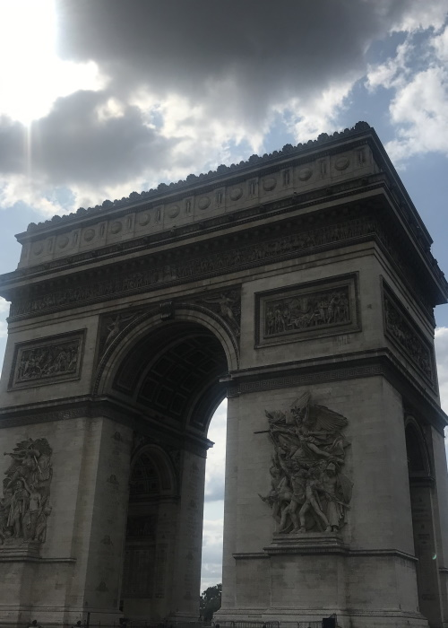

Es el símbolo de Francia
La torre Eiffel (tour Eiffel, en francés), inicialmente llamada tour de 300 mètres (torre de 300
metros), es una estructura de hierro pudelado diseñada por los ingenieros Maurice Koechlin y Émile
Nouguier, dotada de su aspecto definitivo por el arquitecto Stephen Sauvestre y construida por el
ingeniero francés Alexandre Gustave Eiffel y sus colaboradores para la Exposición Universal de 1889 en
París.

Arco de Triunfo
El Arco de Triunfo de París (en francés, Arc de triomphe de l'Étoile o Arc de Triomphe) es uno de los
monumentos más famosos de la capital francesa y probablemente se trate del arco de triunfo más célebre
del mundo.
Basílica de Sacrecoeur
La basílica del Sagrado Corazón de Montmartre,1 (en francés: Basilique du Sacré-Cœur) es un importante templo religioso situado en París (Francia). Está ubicado en lo alto de la colina de Montmartre.Se trata de una basílica menor dedicada al Sagrado Corazón de Jesús (en francés, Sacré Cœur de Jésus).
Opera de París
La Ópera de París (en francés, Opéra national de Paris) es una institución musical de Francia, sucesora de la fundada en París por Luis XIV en 1669 con el nombre de Académie Royale de Musique. Es una de las instituciones de su clase más antiguas de Europa.
Jardines de Luxemburgo
Los jardines de Luxemburgo (en francés, Jardin du Luxembourg), apodados familiarmente Luco, son un parque público parisino de 22,45 ha, situado en el VI Distrito. El Luxemburgo es el jardín del Senado francés, cuya sede se encuentra en el palacio de Luxemburgo.